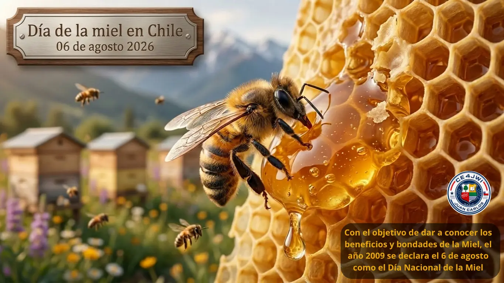

06 de Agosto 2026

El Día de la Miel en Chile es una celebración que rinde homenaje a la importancia de la miel en la cultura y tradiciones chilenas.
La miel es un producto natural que ha sido utilizado por los chilenos durante siglos, tanto en la alimentación como en la medicina tradicional. Además, la apicultura es una actividad económica importante en el país, y el Día de la Miel busca reconocer y promover esta labor.

Durante esta celebración, se realizan diversas actividades, como ferias de productos apícolas, degustaciones de miel, charlas educativas sobre la apicultura y la importancia de las abejas en el ecosistema, y concursos relacionados con la miel. Además, se promueve el consumo de miel local y se destaca su valor nutricional y medicinal.
El Día de la Miel en Chile es una oportunidad para que los chilenos reconozcan y valoren la labor de los apicultores, así como para fomentar el consumo de productos locales y sostenibles. También se busca concienciar sobre la importancia de proteger a las abejas y su hábitat, ya que son fundamentales para la polinización de muchas plantas y cultivos.
En resumen, el Día de la Miel en Chile es una celebración que destaca la importancia de la miel y la apicultura en la culture y economía del país, promoviendo el consumo de productos locales y sostenibles, y concienciando sobre la protección de las abejas y su hábitat.
En el año 2009, se declaró oficialmente el 6 de agosto como el Día Nacional de la Miel en Chile, con el objetivo de reconocer y promover la importancia de este producto natural y su producción en el país.
La fecha fue establecida por el Ministerio de Agricultura y la Sociedad Nacional de Agricultura, en colaboración con la Asociación de Apicultores de Chile, con el fin de destacar la labor de los apicultores y fomentar el consumo de miel local.
¿Por qué son tan importantes las abejas?
Las abejas son polinizadoras por excelencia: mientras recolectan néctar y polen para alimentar a su colonia, transportan polen de una flor a otra y permiten que se formen frutos y semillas. Una gran parte de los cultivos que llegan a nuestras mesas depende, en algún grado, de la polinización que realizan las abejas y otros insectos.
En Chile, la apicultura se desarrolla de norte a sur, con climas y floraciones muy variadas: la miel de Ulmo del sur, la de Quillay del secano y las producciones de la zona central son solo algunos ejemplos de la riqueza apícola nacional. Cada tipo de miel toma su color, su aroma y su sabor de las flores que las abejas visitan.
Una sola colonia de abejas puede visitar miles de flores en un día, y una abeja obrera recorre muchísimos kilómetros a lo largo de su corta vida para recolectar néctar y polen. La próxima vez que veas un frasco de miel, recuerda todo el trabajo que hay detrás de cada gota.
Un tesoro de nuestra tierra
La miel es uno de los alimentos más antiguos que conoce la humanidad y, a diferencia de otros productos, prácticamente no se echa a perder si se guarda bien en un lugar seco. En la medicina tradicional chilena se ha usado desde siempre para calmar la tos y las molestias de la garganta, y hoy se valora también como endulzante natural frente al azúcar refinado.
Proteger a las abejas no es tarea exclusiva de los apicultores: evitar el uso excesivo de pesticidas, plantar flores y resguardar sus hábitats son pequeñas acciones que ayudan a mantener el equilibrio de los ecosistemas. Celebrar el Día de la Miel es, en el fondo, celebrar la vida que las abejas hacen posible.
COMO RADIOAFICIONADO REALIZARÉ ESTA ACTIVIDAD A UN SOLO CONTACTO